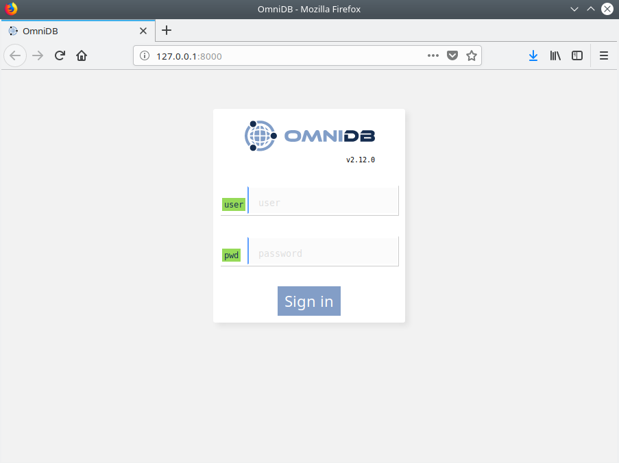

Installation
OmniDB provides 2 kinds of packages to fit every user needs:
- OmniDB Application: Runs a web server on a random port behind, and provides a simplified web browser window to use OmniDB interface without any additional setup. Just feels like a desktop application.
- OmniDB Server: Runs a web server on a random port, or a port specified by the user. User needs to connect to it through a web browser. Provides user management, ideal to be hosted on a server on users’ networks.
Both application and server can be installed on the same machine.
OmniDB Application
Important: The original repository https://github.com/OmniDB/OmniDB/releases contains only old versions (up to ~2020) and is no longer maintained — see Legacy Features & History for what changed since.
For current versions use the revived project’s releases page. Since the Go rewrite, every release is a single self-contained archive per platform — no installer, no separate runtime to install first:
- macOS (Apple Silicon or Intel):
OmniDB-macOS-osx-arm64.zip/OmniDB-macOS-osx-x64.zip - Linux x64:
OmniDB-linux-x64.tar.gz - Windows x64:
OmniDB-win-x64.zip
Unzip (or untar) the archive for your platform and run the OmniDB app/binary inside — that’s the whole install. Linux and Windows builds are produced by CI for every release but haven’t yet been verified on real hardware, unlike the macOS build; if you hit a platform-specific issue on one of those, please open an issue.
Installation via Homebrew (macOS only – recommended)
For macOS users who prefer using a package manager, OmniDB is available through a custom Homebrew tap:
# Install the latest version:
brew install --cask heptau/tap/omnidb# To upgrade later:
brew upgrade heptau/tap/omnidbHomebrew will automatically download the correct ZIP for your architecture (Apple Silicon or Intel), unzip it and place OmniDB.app into your Applications folder.
The cask definition is maintained here: heptau/homebrew-tap – omnidb.rb
Direct download (all platforms)
These links always point to the latest release. For older versions, checksums, and release notes, see the releases page.
Unzip the archive for your platform and launch the app the normal way: on
macOS, drag OmniDB.app into Applications and open it from
Launchpad/Spotlight or open -a OmniDB; on Linux, run the
OmniDB binary directly; on Windows, run OmniDB.exe.
OmniDB Server
The same release archive also contains omnidb-server — a
separate, headless binary alongside the desktop app (the desktop app actually
launches this same binary internally, as a child process, forcing app mode).
Run it directly for the browser-accessible server mode, with no desktop shell
involved:
user@machine:~$ ./omnidb-server
omnidb-server: listening on 127.0.0.1:52149 — open http://127.0.0.1:52149/omnidb_login/ in your browser
By default OmniDB listens on 127.0.0.1 only and picks a free port
automatically. You can specify both explicitly:
user@machine:~$ ./omnidb-server -p 8080 -H 0.0.0.0
omnidb-server: listening on 0.0.0.0:8080 — open http://0.0.0.0:8080/omnidb_login/ in your browser
See Deploying omnidb-server for the full set of options
and recommended deployment setups (in particular, why exposing -H 0.0.0.0
directly to the internet without a reverse proxy in front is discouraged — there’s
no built-in TLS support).
OmniDB with Oracle
Neither OmniDB app nor server require any additional software to connect to Oracle — unlike previous releases, no separate Oracle Instant Client installation is needed. Oracle connectivity is implemented natively (a pure Go driver), so it works the same way out of the box as every other supported database.
OmniDB User Database
Upon first run, both server and app create a file
~/.omnidb/omnidb-app/omnidb.db (for OmniDB app) or
~/.omnidb/omnidb-server/omnidb.db (for OmniDB server) in the user home
directory, if it does not exist yet — along with a default admin/admin
superuser account, ready to sign in with immediately. This file is also called the
user database and contains all users, connections, and other application
data. If it already exists (e.g. after an upgrade), OmniDB uses it as-is — it is
never overwritten or reset automatically.
OmniDB in the browser
Now that the web server is running, you may access OmniDB browser-based app on
your favorite browser. Type in address bar: localhost:8000 and hit Enter. If
everything went fine, you shall see a page like this:

Now you know that OmniDB is running correctly. In the next chapters, we will see how to login for the first time, how to create an user and to utilize OmniDB.